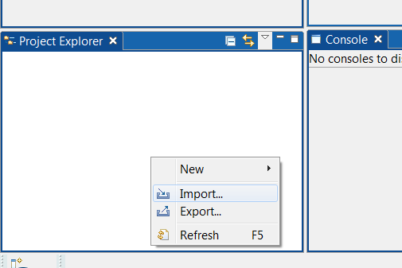
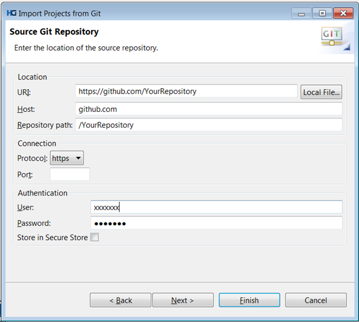
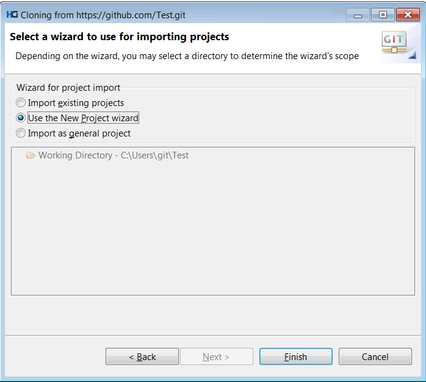
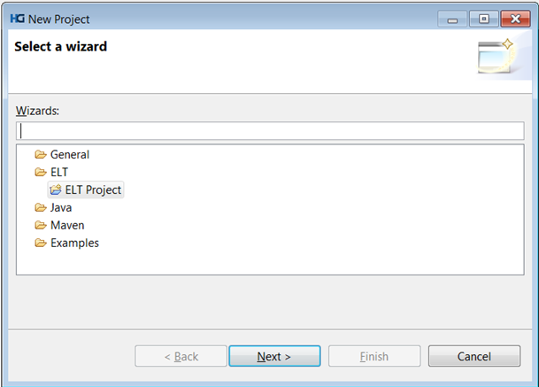
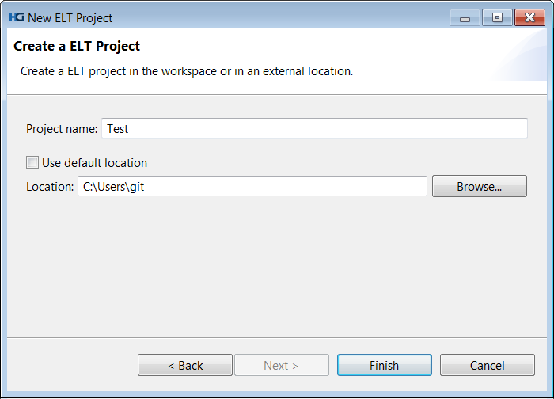
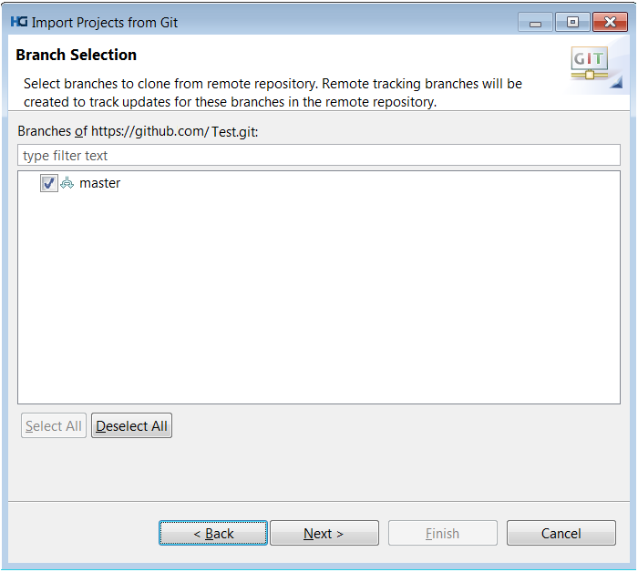

How to create a new Hydrograph project in Git Repository using Hydrograph
Create a new Git Repository for Hydrograph Projects
Follow your organizational process to create Git Repository for Hydrograph Projects. However, personal Git repositories can be created using Github.
Create a new Hydrograph project in Git Repository using Hydrograph
Assumption: Git Repository already exists.
Creating first Hydrograph project in Git Source Repository
These steps will create a Hydrograph project in an empty Git Repository. Steps 1-4 will clone the Git Repository on your local machine.
1) In project explorer window of Hydrograph, right click and select Import.

2) From Hydrograph Project Import Wizard, select Git > Projects from Git >Next > Select URI > Next. Enter details for Git source repository-

The authentication credentials can be stored into Hydrograph Secure Store. Also, protocol can be chosen between git, http, https, ssh etc.
3) After entering Git Repository details, click Next. Since the Git repository is empty ( if you are creating very first project under the Git Repository ), below screen will be displayed:

4) Click Next and configure the local storage for the Git Repository-

5) Now, click Next and select 'Use the New Project Wizard' and click Finish.

6) It will take to Hydrograph New Project wizard. Select ELT Project:

7) Click Next and provide Project name and then click Finish.

These steps will create a new ELT Project in local Git Repository location. In order to share this project in local git repository as well as make it available in Git Source Repository, follow the steps from Git Check-in page.
Creating Hydrograph ELT project in Git Repository where at least one project already exists
These steps will create a Hydrograph project in a Git Repository where at least one project and thus, one or more git branches exist. Steps 1-4 will clone the Git Repository on your local machine.
1) In project explorer window of Hydrograph, right click and select Import.
2) From Hydrograph Project Import Wizard, select Git > Projects from Git >Next > Select URI > Next. Enter details for Git source repository-
The authentication credentials can be stored into Hydrograph Secure Store. Also, protocol can be chosen between git, http, https, ssh etc.
3) After entering Git Repository details, click Next and select Git branches to clone:

4) Provide local storage for Git Repository:
5) Click Next and choose ‘Use the New Project Wizard’ and then click Finish:
6) It will take to Hydrograph New Project wizard. Select ELT Project:
7) Click Next and provide Project name and then click Finish.
These steps will create a new ELT Project in local Git Repository location. In order to share this project in local git repository as well as make it available in Git Source Repository, follow the steps from Git Check-in page.